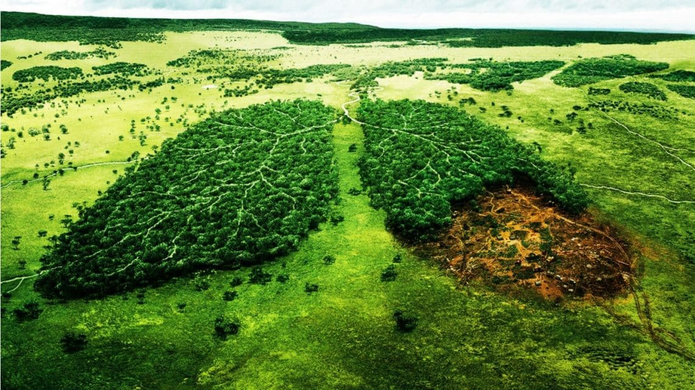
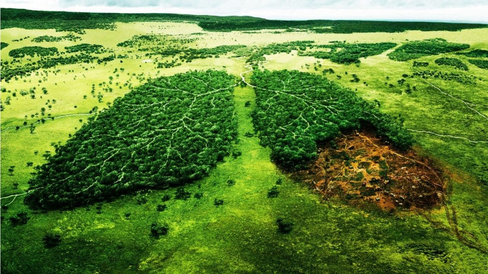

Importancia Del MedioAmbiente:
El medio ambiente es muy importante, porque de el obtenemos agua, comida, combustibles y materias primas que sirven para fabricar las cosas que utilizamos diariamente. El es nuestro hogar, de el depende nuestra existencia humana. Al abusar o hacer mal uso de los recursos naturales que se obtienen del medio ambiente, lo ponemos en peligro y lo agotamos. El aire y el agua están contaminándose, los bosques están desapareciendo, debido a los incendios y a la explotación excesiva y los animales se van extinguiendo por el exceso de la caza y de la pesca.
Por lo consiguiente, si el medio ambiente es nuestra casa, ¿porque lo estamos destruyendo? el nos brinda todos los recursos indispensable para la continuidad de la vida en el planeta. Es nuestra casa, cuidemos y conservemos de ella no solo por nosotros, sino por nuestros hijos y nietos que merecen vivir en mundo mejor. Demostremole la importancia que el se merece para nosotros los humanos.

.jpg) 

Tips Para Cuidar El MedioAmbiente:
Separa la basura. Desde pequeños es bueno que los niños aprendan a separar los residuos para que se puedan reciclar.
Usa productos que puedan reutilizarse. Hay muchos productos que se pueden usar varias veces para proteger la naturaleza. Por ejemplo, utiliza servilletas de tela en lugar de servilletas de papel.
Apaga las luces. Parece obvio, pero no nos damos cuenta de la cantidad de veces que encendemos la luz de una habitación que no ocupamos. Acostumbra a tus hijos a apagar la luz y cuando te marches de casa comprueba que todo está apagado.
Consume frutas y verduras ecológicas. Los productos ecologicos cuidan el medio ambiente porque en su producción no se utilizan fertilizantes ni otros productos contaminantes.
Evita dejar los aparatos enchufados. Recuerda que los aparatos que están apagados pero siguen enchufados consumen energía, por lo que es importante desenchufarlos.
Cierra los grifos correctamente. Cuando no utilices el agua, cierra el grifo y controla que no existan fugas.
Utiliza el termostato. Tanto para la calefacción como para el aire acondicionado es necesario utilizar un termostato.